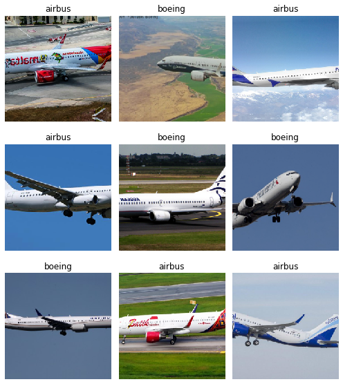
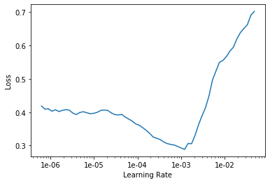
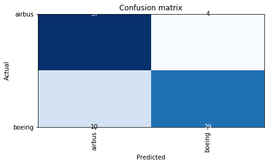
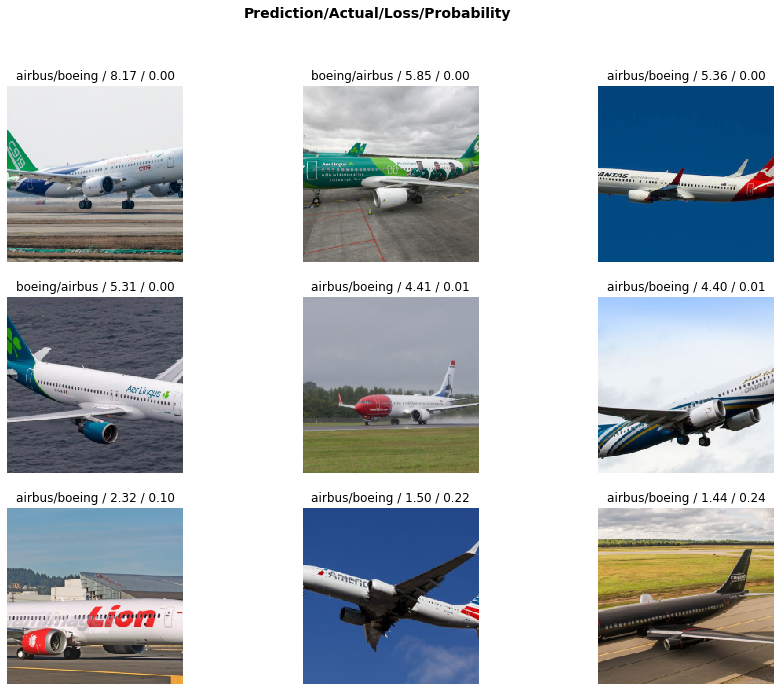

Airplane Classifier with Fast.ai Library
The fast.ai deep learning course is a practical top-down deep learning course for practicioners. Immediately after the first two hour lecture, it is possible to train an image classifier on your own dataset using state-of-the-art deep learning techniques. The reason for this accesibility is the excellent fast.ai software which builds upon the popular PyTorch deep learning library.
In this post I will show you how I applied the techniques and lessons from the first fast.ai lecture to a plane classifier. I will show you how to download your own dataset, how to train an image classifier using the fast.ai software, and finally how to evaluate the performance of the trained model.
Create Data
The easiest way to create your own dataset for your image classifier is to follow the instructions of the fast.ai notebook which can be found here. Using these instructions I downloaded images of the boeing 737 and airbus A320 airplanes. While, for most people these planes are indistinguisable from each other, there are small differences between the planes. These include the shape of the nose, the wing tips and the position of the engines under the wings.
After downloading the images in their subfolders data/boeing and data/airbus I wanted to split this data into a training, validation and testing set. Since I could not find a simple tool to just give my folder of images and do this split for me, I created a little tool. This creates three folders, data/train, data/validation and data/test. These folders then contain the subfolders corresponding to the classes found in the original data folder, namely, boeing and airbus.
Load Data
We first import some functions from the fast.ai library that we will use for our analysis.
%reload_ext autoreload
%autoreload 2
%matplotlib inlinefrom fastai.vision import *
from fastai.metrics import error_rate
from fastai.callbacks.tracker import SaveModelCallbackNow, we will select our folder containing the images and load it into the fast.ai library.
help(get_image_files)
path = '/home/jupyter/data'Help on function get_image_files in module fastai.vision.data:
get_image_files(c: Union[pathlib.Path, str], check_ext: bool = True, recurse=False) -> Collection[pathlib.Path]
Return list of files in `c` that are images. `check_ext` will filter to `image_extensions`.data = ImageDataBunch.from_folder(path, valid='validation', ds_tfms=get_transforms(), size=224).normalize(imagenet_stats)Let’s check out the sizes of our training and validation set and load a small sample of our images.
data.classes, data.c, len(data.train_ds), len(data.valid_ds)(['airbus', 'boeing'], 2, 245, 80)data.show_batch(rows=3, figsize=(7,8))
Train ResNet 34 model
To train our plane classifier we use the state-of-the-art ResNet34 model as our basis. We first try to see what accuracy we can obtain by training the last layers. As we will see, this gives unsatisfactory results. We can simply load the ResNet34 model directly from the fast.ai library and start training it with only two lines of code!
learn = cnn_learner(data, models.resnet34, metrics=[error_rate, accuracy])learn.fit_one_cycle(10, callbacks=[SaveModelCallback(learn, every='improvement', monitor='accuracy', name='model')])| epoch | train_loss | valid_loss | error_rate | accuracy | time |
|---|---|---|---|---|---|
| 0 | 1.411946 | 1.175786 | 0.437500 | 0.562500 | 00:06 |
| 1 | 1.193475 | 0.849596 | 0.450000 | 0.550000 | 00:04 |
| 2 | 1.086779 | 0.961117 | 0.412500 | 0.587500 | 00:04 |
| 3 | 0.996292 | 1.146309 | 0.375000 | 0.625000 | 00:05 |
| 4 | 0.925049 | 0.991192 | 0.375000 | 0.625000 | 00:04 |
| 5 | 0.856052 | 0.941140 | 0.325000 | 0.675000 | 00:04 |
| 6 | 0.813291 | 0.995522 | 0.350000 | 0.650000 | 00:04 |
| 7 | 0.752976 | 1.061707 | 0.350000 | 0.650000 | 00:04 |
| 8 | 0.715641 | 1.104084 | 0.375000 | 0.625000 | 00:05 |
| 9 | 0.676570 | 1.111519 | 0.375000 | 0.625000 | 00:04 |
Clearly our model is still very bad. We might want to try to ‘unfreeze’ our model to train all layers instead of the last ones. Furthermore, to speed-up training, we can fix the learning rate of the learning algorithm by monitoring which rates give the best training results. Another trick to obtain a good model is to use early-stopping. Early-stopping helps us with overfitting by recognising when the training loss keeps decreasing but the validation loss no longer decreases. This happens when we overfit our model and optimise our model for the training set and therefore results in worse generalisation performance as can be seen in the rise of validation loss.
learn.unfreeze()
learn.lr_find()LR Finder is complete, type {learner_name}.recorder.plot() to see the graph.learn.recorder.plot()
learn.fit_one_cycle(13, max_lr=slice(1e-4,1e-2), callbacks=[SaveModelCallback(learn, every='improvement', monitor='accuracy', name='model')])| epoch | train_loss | valid_loss | error_rate | accuracy | time |
|---|---|---|---|---|---|
| 0 | 0.393597 | 1.036158 | 0.275000 | 0.725000 | 00:05 |
| 1 | 0.455709 | 2.487670 | 0.437500 | 0.562500 | 00:05 |
| 2 | 0.508346 | 4.054496 | 0.512500 | 0.487500 | 00:05 |
| 3 | 0.625813 | 3.290894 | 0.375000 | 0.625000 | 00:05 |
| 4 | 0.735456 | 6.999222 | 0.550000 | 0.450000 | 00:05 |
| 5 | 0.684926 | 3.586192 | 0.450000 | 0.550000 | 00:05 |
| 6 | 0.622755 | 2.036758 | 0.425000 | 0.575000 | 00:05 |
| 7 | 0.582402 | 1.667793 | 0.312500 | 0.687500 | 00:05 |
| 8 | 0.524937 | 1.206267 | 0.300000 | 0.700000 | 00:05 |
| 9 | 0.476152 | 0.784825 | 0.225000 | 0.775000 | 00:05 |
| 10 | 0.437106 | 0.674155 | 0.200000 | 0.800000 | 00:05 |
| 11 | 0.402961 | 0.615875 | 0.175000 | 0.825000 | 00:05 |
| 12 | 0.368615 | 0.577250 | 0.175000 | 0.825000 | 00:05 |
Better model found at epoch 0 with accuracy value: 0.7250000238418579.
Better model found at epoch 9 with accuracy value: 0.7749999761581421.
Better model found at epoch 10 with accuracy value: 0.800000011920929.
Better model found at epoch 11 with accuracy value: 0.824999988079071.learn.save('model-1')Interpret results
Now that we have trained our model we want to do some inferences. Luckily, fast.ai got us covered. The ClassificationInterpration class provides many handy tools to check the performance of our model. Let’s check out the confusion matrix to see where things go wrong.
interp = ClassificationInterpretation.from_learner(learn)
interp.plot_confusion_matrix()
While we do manage to classify many planes correctly, I am curious on what images our model has problems. We can check this out as follows.
interp.plot_top_losses(9, figsize=(15,11))
Mmm… personally it is unclear to me why the model has problems identifying these images. In the above we only see the images in square format. I am wondering whether the model is also trained on these squared images or that it uses the original typically horizontal images.
Conclusion
While our model has okay performance. I am not sure what the model has learnt exactly.
There are several things I am interested in learning on my fast-ai and deep learning journey in general:
Is there a way to tell what our model has learnt? For our plane example, the difference between the boeing and airbus planes is mostly in the wing design and shape of the nose of the plane. Is there a way to check whether our model has been able to learn these features?
So far it has not been clear to me how image classifiers deal with non-square images. Does it crop the images in to use in the model or does the ResNet model allow for variable sized images?
How do you decide to use a certain transformation of the image data. Is it always okay to augment our dataset by adding transformation of our image data like turning or mirroring images.
I hope to see you in the next post about fast.ai!